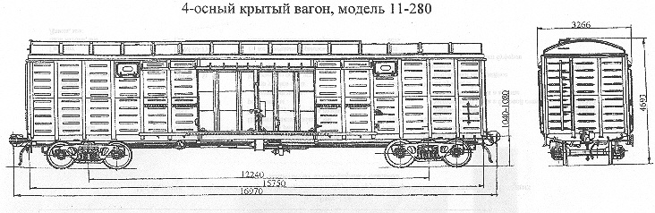

Назначение: для перевозки штучных, зерновых и других грузов широкой номенклатуры требующих защиты от атмосферных осадков
Параметры
| Номер проекта | 280.00.000-00 |
| Технические условия | ТУ24.05.949-90 |
| Модель вагона | 11-280 |
| Тип вагона | |
| Изготовитель | АО "Алтайвагон" |
| Грузоподъемность, т | 68 |
| Масса тары вагона, т | 26 |
| Нагрузка: статическая осевая, кН(тс) |
230,3(23,5) |
| погонная, кН/м(тс/м) | 54,29(5,54) |
| Скорость конструкционная, км/ч | 120 |
| Габарит | 1-ВМ(0-Т) |
| База вагона, мм | 12240 |
| Длина, мм: по осям сцепления автосцепок |
16970 |
| по концевым балкам рамы (длина рамы) | 15750 |
| Ширина максимальная, мм | 3266 |
| Высота от уровня верха головок рельсов, мм: максимальная |
4693 |
| до уровня пола | 1286 |
| Количество осей, шт. | 4 |
| Модель 2-осной тележки | 18-100 |
| Наличие переходной площадки | нет |
| Наличие стояночного тормоза | есть |
| Объем кузова,м³ | 138 |
| Внутренние размеры кузова,мм: длина |
15724 |
| ширина | 2764 |
| Наличие торцевых дверей | нет |
| Количество загрузочных люков в боковой стене, шт. | 4 |
| Размер в свету (длина, ширина) загрузочного люка в боковой стене, мм | 614x365 |
| Площадь пола, м² | 43,5 |
| Год постановки на серийное производство | 1991 |
| Возможность установки буферов | нет |